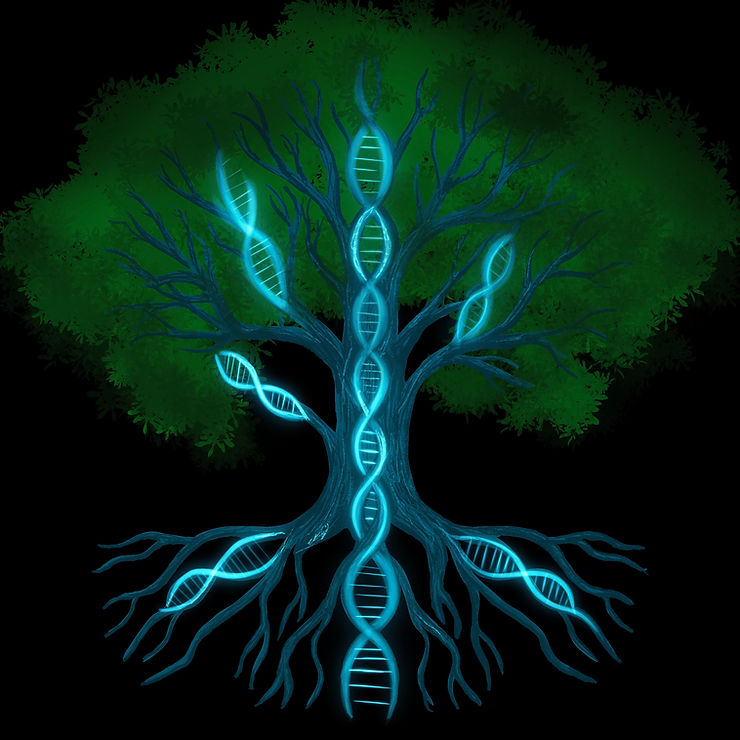

When I was first diagnosed with ADHD, one of the big questions I had was why me? Did I just draw the short straw, or was there something deeper at play? Like many of us, I quickly learned that ADHD isn’t about laziness, bad parenting, or “not trying hard enough.” It’s a neurodevelopmental condition, and genetics plays a huge role in shaping it.
The same is true for autism. Autism Spectrum Disorder (ASD) is also highly heritable, with genetic studies showing that DNA plays the largest role in why it develops. ADHD and autism often run together in families because they share many of the same genetic roots.
In this post, I want to break down what science tells us about the genetic side of ADHD and autism, why it matters, and how this knowledge can empower us to understand ourselves better.
Are ADHD and Autism Genetic? The Evidence So Far
The short answer is: yes, strongly. Research has consistently shown that ADHD and Autism are two of the most heritable psychiatric conditions. Twin studies for ADHD, for example, reveal heritability rates of 70–80%, meaning genetics explains most of the risk of developing ADHD. Likewise, twin studies for autism reveal heritability rates of 80-90%, which means autism is also strongly genetic in nature. These are both higher than conditions like depression or anxiety.
This doesn’t mean environment has no influence. Factors like prenatal health, early life stress, and toxins can play a role in how genes are expressed. But it does mean that, more often than not, both ADHD and autism run in families. If you have ADHD or autism, there’s a good chance at least one parent or child shares that wiring.
What Genes Are Involved?
The “Classic” ADHD Genes
One of the first things scientists did when studying ADHD was to look at the brain’s “motivation and reward” system, powered by a chemical messenger called dopamine. Think of dopamine as the fuel that keeps us focused, motivated, and ready to act. Some of the earliest ADHD genes discovered are connected to how dopamine works.
- DRD4: This gene is like the settings dial on how sensitive you are to rewards. A particular version, called the 7-repeat allele is often linked with people who crave novelty or excitement. It doesn’t cause ADHD, but it tweaks how motivation shows up, which can make staying on boring tasks extra tough.
- DAT1 (also called SLC6A3): Imagine dopamine as little sparks in the brain. DAT1 is the clean-up crew that sweeps those sparks away when the job is done. Different versions of this gene can change how efficiently the crew works, which may affect focus and reward processing.
- DRD5: Another dopamine-related gene that shows up in ADHD studies. It helps fine-tune how dopamine signals are received, especially in brain regions tied to attention and self-control.
Beyond Dopamine: A Bigger Genetic Picture
As genetic tools got more advanced, scientists realized ADHD isn’t just about dopamine. Many other genes play small but important roles:
- LPHN3: A variant of this gene may be linked to how well someone responds to stimulant medication. Some studies suggest it might account for up to 1 in 10 ADHD cases..
- CDH13: This one is fascinating because it also shows up in studies of autism, bipolar disorder, and schizophrenia. It helps explain why these conditions sometimes run together in families.
- Other helpers: Genes like SNAP25 (helps brain cells “talk” to each other), HTR1B (part of the serotonin system), GRIN2A (involved in learning and memory), and BDNF (supports brain growth and flexibility) all contribute in small but meaningful ways.
Autism Genes: A Wider Cast of Characters
Just like ADHD, autism doesn’t boil down to a single “autism gene.” Instead, it’s influenced by hundreds of little changes scattered across our DNA. Each one on its own doesn’t do much, but together they tip the scale.
Some of the ones scientists keep coming back to include:
- CHD8: Think of this as one of the “master builders” for brain development. Variations here can influence how the brain grows and organizes itself.
- SHANK3: This gene is all about communication. It helps brain cells build the scaffolding they need to pass signals back and forth. When it’s tweaked, that scaffolding can be weaker, which may affect how social and sensory information gets processed.
- NRXN1 and the NLGN family: These are like the connectors and plugs that let neurons “shake hands” and form working networks. If the handshake is weaker, the wiring can be a little less smooth, which can show up as challenges in communication or flexibility.
- 16p11.2 microdeletion: Instead of a single gene, this is a small missing piece of a chromosome. It’s one of the most common genetic findings in autism and can influence brain size, development, and learning.
None of these guarantee autism, and not everyone with autism has these variations. But together they give us clues about which parts of the brain’s blueprint are most sensitive when it comes to social connection, communication, and sensory processing.
Shared Genetic Pathways: Why ADHD and Autism Run Together
One of the coolest (and most frustrating) things scientists have discovered is that ADHD and autism don’t exist in neat, separate boxes. They share a lot of the same genetic wiring.
For example:
- CDH13: This gene has been linked not only to ADHD and autism but also to mood conditions like bipolar disorder. It’s like a crossroads gene, meaning when it’s altered, it can show up in different ways depending on someone’s unique mix of DNA and life experiences.
- SHANK3 (again): We already talked about this gene in autism, but it also shows up in ADHD research. That overlap helps explain why you sometimes see both diagnoses in the same family, or even in the same person.
- Other network helpers: Genes that guide brain connectivity, like those involved in synapses (SNAP25), serotonin (HTR1B), or brain growth (BDNF) show up across both conditions too.
What this tells us is that ADHD and autism are part of a bigger genetic “family” of neurodevelopmental differences. Sometimes those differences lean more toward attention and reward (ADHD), sometimes more toward social communication (autism), and sometimes both.
Instead of thinking of ADHD and autism as two completely separate roads, imagine them as highways that run side by side, with a lot of shared exits and on-ramps. Genetics is one of the biggest reasons why.
What’s New in the Research
For many years, ADHD and autism research focused on one gene at a time. But today scientists have much more powerful tools they can use which gives us a much clearer and much more exciting view of the big picture.
- Adding It All Up: Polygenic Risk Scores (PGS): Instead of looking at one gene at a time, scientists now look at hundreds of tiny variations across the genome. They combine these into something called a polygenic risk score, which is sort of like a credit score, but for neurodevelopmental differences. Both ADHD and autism show strong polygenic profiles.
- Rare Variants: Big Changes with Big ImpactMost of the genetic differences linked to ADHD and autism are small, but every once in a while scientists find bigger changes. These are called rare variants, and they can have a stronger effect.
One example in autism is the 16p11.2 copy number variation (CNV), where a chunk of chromosome 16 is either missing or doubled. That stretch includes about 25 genes important for brain development, and when it is altered it can affect things like brain size, language, and learning.
In ADHD, researchers have also started uncovering rare variants. A recent study pointed to KDM5B, a gene that helps regulate how DNA is “unpacked” inside cells, which can change how brain-related genes are switched on or off.
These kinds of rare changes are not the whole story, but when they do show up, they can have a powerful impact on how the brain develops and functions.
The Genetic Web of ADHD and Autism
These advances show us that ADHD and autism are even more complex than we thought. It’s not just about dopamine or a handful of “classic” genes. It’s a web of many genetic signals, each one nudging the brain in small ways. The better we understand this web, the closer we get to treatments and supports that can be more personalized maybe even tailored to someone’s unique genetic profile in the future.
Genetics Meets the Brain

Our genes do not just sit quietly in the background. They are busy shaping how our brains grow, connect, and work every single day. In ADHD, many of the genetic variations we have been talking about play directly into how the dopamine system functions. In autism, many of the key variations affect how brain cells connect and communicate with one another. Both sets of changes ripple outward, touching the brain circuits that guide planning, motivation, social interaction, and decision-making.
Brain Regions Affected by Genetic Variations
- Prefrontal Cortex (the “CEO” of the brain): This area helps us plan, prioritize, and pause before acting. In ADHD, changes in dopamine signaling here can make it harder to filter distractions or resist impulses. In autism, connectivity differences in this region can influence flexible thinking and social decision-making.
- Basal Ganglia (the habit and reward hub): These structures drive motivation and learning through rewards. Genetic differences in ADHD, such as in the DAT1 transporter gene, may change how effectively rewards reinforce habits. In autism, variations in genes that regulate synapses can shift how routines are built and how motivation is tied to social versus nonsocial rewards.
- Frontoparietal Network (the multitasker): This network helps us juggle information and shift attention. In ADHD, certain dopamine receptor variants can make it harder to hold things in working memory or switch gears smoothly. In autism, this network can show differences in how attention is shifted between details and the bigger picture.
- Cerebellum (the timekeeper and coordinator): Once thought of as only a motor-control center, the cerebellum also supports timing, rhythm, and aspects of attention. ADHD-linked genes can shape its size and connectivity, which may explain why time management feels slippery. In autism, the cerebellum has been linked to coordination, sensory processing, and social timing, such as interpreting pauses in conversation.
- Social and Communication Networks (the “connectors”): In autism especially, genes like SHANK3 and NRXN1 affect synapses in brain regions that handle social cues and language. These differences help explain why social communication can feel more effortful, while nonsocial interests may feel more natural and rewarding.
What Imaging Studies Show
Brain scans back this up. Compared to neurotypical brains, ADHD and autism brains often show:
- Differences in overall brain volume in regions such as the prefrontal cortex, basal ganglia, and cerebellum.
- Altered connectivity patterns, especially in networks for attention, motivation, and social processing.
- Distinct activation responses: ADHD brains often need a bigger “spark” to get the same dopamine kick, while autism brains may process social cues and sensory information in unique ways.
What This Means for Us
When we connect the dots between genes and brain networks, we start to see ADHD and autism not as weaknesses but as different wirings. For example:
- Struggling to start a task is not laziness. It can reflect how the prefrontal cortex and dopamine system interact in ADHD.
- Finding social communication exhausting is not a personal failing. It reflects how autism-related genes shape synapse function and brain connectivity.
- Craving novelty or repetition is not immaturity. It reflects how reward systems are tuned differently in ADHD and autism.
- Challenges with time management are not flaws in character. They reflect differences in how the cerebellum and frontoparietal network handle timing and priorities.
Genetics gives us the “why,” brain imaging shows us the “how,” and together they remind us that ADHD and autism are about biology, not willpower. Once we understand how our brain is wired, we can start building strategies that work with it instead of against it.
Nature, Nurture, and Epigenetics
Genes are like the blueprints for building our brains, but they don’t tell the whole story. Enter epigenetics, which is all about how our surroundings can change the way our genes behave without actually messing with the genetic code itself. Imagine your genes as a set of light switches: the wiring is there, but life experiences and the environment can flip those switches on or off.
When it comes to ADHD and autism, that means someone might have genes that raise their risk, but how those genes actually act can change based on what’s happening in their life.
Examples of How the Environment Influences Genes:
- Prenatal Environment: If a mom is stressed, smoking, or drinking during pregnancy, it can mess with how certain brain-related genes are turned on or off in her developing baby.
- Early Life Stress: Going through tough times as a kid, such as trauma or neglect, can leave behind “epigenetic marks” that change how genes responsible for focus and self-control work.
- Nutrition: Not getting enough of the right nutrients (like omega-3s, iron, or zinc) can affect gene behavior in ways that impact brain growth and how our brain chemicals balance out.
- Environmental Toxins: Exposure to things like lead or other pollutants can tweak how neurodevelopmental-related genes are activated.
What’s really cool about epigenetics is its flexibility. Unlike our DNA, which is pretty set in stone, epigenetic changes can sometimes be undone or softened. Things like a supportive environment, therapy, medication, reducing stress, and even exercise can help turn those gene switches to a more positive setting.
Epigenetics is like a bridge between “nature” and “nurture.” It shows us why two kids with similar genetic risks for ADHD and autism can end up in totally different places based on their surroundings. It also highlights how important it is to step in early and create a nurturing environment.
In summary, genes may set the stage, but it's often the environment that takes action, or sometimes even prevents it from happening.
Clearing Up the Tylenol Myth
With recent public figures claiming that Tylenol “causes autism,” it’s important to set the record straight.
Large, high-quality studies involving millions of children show no credible link between vaccines, Tylenol, or similar exposures and autism. For example, a Swedish cohort study of nearly 2.5 million children found that when comparing full siblings, there was no significant difference in rates of autism, ADHD, or intellectual disability associated with acetaminophen use during pregnancy.
Yes, some studies suggest associations between heavy prenatal Tylenol use and developmental outcomes but these are correlations, not proof of causation. When all the evidence is weighed, the overwhelming conclusion is clear: autism is primarily genetic.
Repeating debunked claims only stigmatizes families and distracts from the real science that could actually help.
Why Understanding Genetics Matters
Knowing that ADHD and autism are highly genetic is not about doom and gloom. It is about self-understanding and advocacy. It helps reduce the stigma that often comes with both conditions and proves they are not choices or character flaws. They are rooted in biology.
Understanding dopamine-related genes in ADHD and synapse-related genes in autism helps us make sense of why certain supports work. For example, stimulant medications often help in ADHD because they boost dopamine signaling. In autism, knowing which genes affect communication and social processing may one day guide more personalized supports and therapies.
Genetics also helps us highlight family patterns. If ADHD or autism shows up in one person, it is not unusual to see traits in parents, siblings, or children as well. Recognizing these patterns can give families context and help more people access the support they need.
Finally, knowing the genetic side of ADHD and autism reminds us that while environment shapes expression, the foundation is biological. This shifts the conversation away from blame and toward compassion, evidence-based strategies, and policies that create better support for neurodivergent people.
The Bottom Line
ADHD and autism are some of the most heritable conditions we know of, shaped by a mix of many genes interacting with environment. While we don’t yet have a genetic test that can predict either one with certainty, the science is moving fast. Each new study helps us understand not just what ADHD and autism are, but why our brains work the way they do.
That knowledge is powerful. The more we understand, the better we can build tools, strategies, and compassion for ourselves and for the next generation of neurodivergent brains.
References:
Balogh, L., Viszokay, L., Horváth, J., Kóbor, A., Komlósi, S., & Bitter, I. (2022). Genetics in the ADHD clinic: How can genetic testing support the diagnosis and treatment of ADHD? Frontiers in Psychology, 13, 751041. https://doi.org/10.3389/fpsyg.2022.751041
Faraone, S. V., & Larsson, H. (2019). Genetics of attention deficit hyperactivity disorder. Molecular Psychiatry, 24(4), 562–575. https://doi.org/10.1038/s41380-018-0070-0
Grigoroiu-Serbanescu, M., Diaconu, C. C., Tudorache, S., & Pana, A. (2020). Predictive power of ADHD GWAS 2019 polygenic risk scores in an independent sample of patients with ADHD and major psychiatric disorders. Journal of Neural Transmission, 127, 1017–1028. https://doi.org/10.1016/j.jad.2019.11.109
Jung, M., et al. (2025). Rare variant analyses in ancestrally diverse cohorts reveal novel ADHD risk genes. Nature Genetics, 57(1), 67–76. https://doi.org/10.1101/2025.01.14.25320294
Klein, M., Onnink, M., van Donkelaar, M., Wolfers, T., Harich, B., Shi, Y., ... & Franke, B. (2017). Brain imaging genetics in ADHD and beyond—Mapping pathways from gene to disorder at different levels of complexity. Neuroscience & Biobehavioral Reviews, 80, 115–155. https://doi.org/10.1016/j.neubiorev.2017.01.013
Larsson, H., Anckarsäter, H., Råstam, M., Chang, Z., & Lichtenstein, P. (2012). Childhood attention-deficit hyperactivity disorder as an extreme of a continuous trait: A quantitative genetic study of 8,500 twin pairs. Journal of Child Psychology and Psychiatry, 53(1), 73–80. https://doi.org/10.1111/j.1469-7610.2011.02467.x
Stergiakouli, E., Hamshere, M., Holmans, P., Langley, K., Zaharieva, I., Hawi, Z., ... & Thapar, A. (2012). Investigating the contribution of common genetic variants to the risk and pathogenesis of ADHD. American Journal of Psychiatry, 169(2), 186–194. https://doi.org/10.1176/appi.ajp.2011.11040551
Yadav, P., Shukla, R., Tripathi, A., & Kumari, R. (2021). Genetic variations influence brain changes in patients with attention-deficit hyperactivity disorder. Translational Psychiatry, 11, 548. https://doi.org/10.1038/s41398-021-01473-w
Hviid, A., Hansen, J. V., Frisch, M., & Melbye, M. (2019). Measles, mumps, rubella vaccination and autism: A nationwide cohort study. Annals of Internal Medicine, 170(8), 513–520. https://doi.org/10.7326/M18-2101
Ahlqvist VH, Sjöqvist H, Dalman C, et al. Acetaminophen Use During Pregnancy and Children’s Risk of Autism, ADHD, and Intellectual Disability. JAMA. 2024;331(14):1205–1214. https://doi.org/10.1001/jama.2024.3172
Tick, B., Bolton, P., Happé, F., Rutter, M., & Rijsdijk, F. (2016). Heritability of autism spectrum disorders: A meta-analysis of twin studies. Journal of Child Psychology and Psychiatry, 57(5), 585–595. https://doi.org/10.1111/jcpp.12499
If you find this article interesting, feel free to leave a comment below. If you want to learn more, feel free to send me an email at braden@empoweradhdsolutions.com or come discuss it with us on our Discord Community! We have a diverse community enthusiastic about engaging in conversations related to ADHD, neurodiversity, geeky topics, and more. Additionally, we offer numerous resource links for additional reading and self-improvement
And finally, if you want to support my work, please consider subscribing. Your support helps allow me to continue my work helping to make the world a better place for neurodivergent minds.